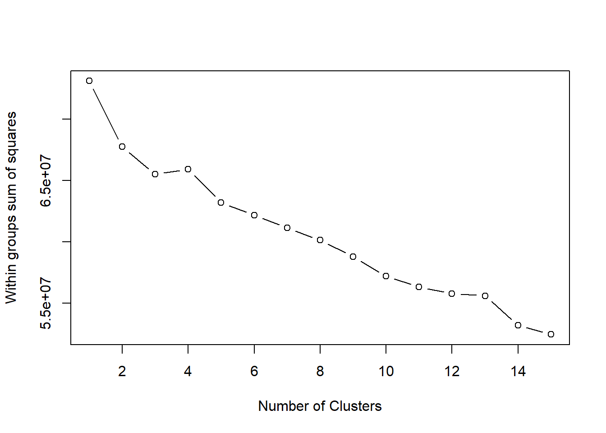
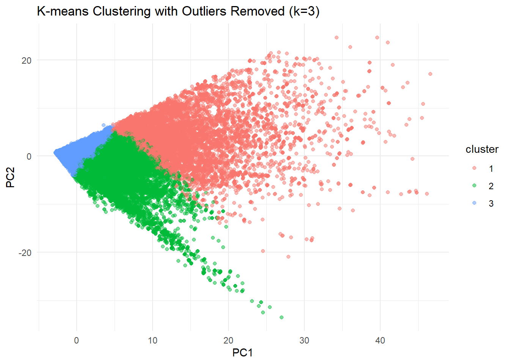

load("../data/tech_data.Rdata")k-means try
library(ggplot2)
library(caret)Loading required package: latticelibrary(dplyr)
Attaching package: 'dplyr'The following objects are masked from 'package:stats':
filter, lagThe following objects are masked from 'package:base':
intersect, setdiff, setequal, unionlibrary(tidyr)Number for K
# 1. Load data and filter numeric variables
tech_food_numeric <- tech_food[, sapply(tech_food, is.numeric)]
# 2. Remove rows containing NA
tech_food_numeric_clean <- tech_food_numeric[complete.cases(tech_food_numeric), ]
# 3. Remove rows with a value of 0 from all variables
tech_food_numeric_clean <- tech_food_numeric_clean[rowSums(tech_food_numeric_clean == 0) != ncol(tech_food_numeric_clean), ]
# 4. Delete columns with a single value that are meaningless to clustering
tech_food_numeric_clean <- tech_food_numeric_clean[, apply(tech_food_numeric_clean, 2, function(x) length(unique(x)) > 1)]
# 5. Standardized data
scaled_data <- scale(tech_food_numeric_clean)
# 6. Use the Elbow method to select the appropriate number of clusters
wss <- (nrow(scaled_data)-1)*sum(apply(scaled_data, 2, var))
for (i in 2:15) wss[i] <- sum(kmeans(scaled_data, centers=i)$tot.withinss)
plot(1:15, wss, type="b", xlab="Number of Clusters", ylab="Within groups sum of squares")
K could be 3.
Data preparation
# Remove any rows with NA values
tech_food_numeric_clean <- na.omit(tech_food_numeric_clean)
# Scale the data to standardize
scaled_data <- scale(tech_food_numeric_clean)
# Take a random sample of 10,000 observations from the dataset
set.seed(123)
sample_data <- scaled_data[sample(1:nrow(scaled_data), 10000), ]
correlation_matrix <- cor(scaled_data)
highly_correlated <- findCorrelation(correlation_matrix, cutoff = 0.9)
reduced_data <- scaled_data[, -highly_correlated]
mahalanobis_distances <- mahalanobis(reduced_data, colMeans(reduced_data), cov(reduced_data))
threshold <- quantile(mahalanobis_distances, 0.99)
outliers <- which(mahalanobis_distances > threshold)
cleaned_data <- reduced_data[-outliers, ]k-means
kmeans_result <- kmeans(cleaned_data, centers = 3, nstart = 10)
pca_result <- prcomp(cleaned_data, center = TRUE, scale. = TRUE)
pca_data <- as.data.frame(pca_result$x[, 1:2])
pca_data$cluster <- as.factor(kmeans_result$cluster)
ggplot(pca_data, aes(x = PC1, y = PC2, color = cluster)) +
geom_point(alpha = 0.5) +
labs(title = "K-means Clustering with Outliers Removed (k=3)") +
theme_minimal()
# Summarise the features of each cluster
data_with_clusters <- data.frame(cleaned_data, cluster = kmeans_result$cluster)
cluster_summary <- data_with_clusters %>%
group_by(cluster) %>%
summarise(across(everything(), list(mean = mean, sd = sd, median = median)))
print(cluster_summary)# A tibble: 3 × 331
cluster ENERGYNF_mean ENERGYNF_sd ENERGYNF_median MOISTURE_mean MOISTURE_sd
<int> <dbl> <dbl> <dbl> <dbl> <dbl>
1 1 2.39 1.49 2.09 0.0777 0.410
2 2 0.846 0.932 0.563 -0.0454 0.698
3 3 -0.347 0.408 -0.503 0.000471 1.06
# ℹ 325 more variables: MOISTURE_median <dbl>, PROTEIN_mean <dbl>,
# PROTEIN_sd <dbl>, PROTEIN_median <dbl>, CHOWSA_mean <dbl>, CHOWSA_sd <dbl>,
# CHOWSA_median <dbl>, SUGARS_mean <dbl>, SUGARS_sd <dbl>,
# SUGARS_median <dbl>, FIBRE_mean <dbl>, FIBRE_sd <dbl>, FIBRE_median <dbl>,
# ALCOHOL_mean <dbl>, ALCOHOL_sd <dbl>, ALCOHOL_median <dbl>,
# PREVITA_mean <dbl>, PREVITA_sd <dbl>, PREVITA_median <dbl>,
# PROVITA_mean <dbl>, PROVITA_sd <dbl>, PROVITA_median <dbl>, …cluster_summary_long <- cluster_summary %>%
pivot_longer(
cols = -cluster,
names_to = c("feature", "statistic"),
names_sep = "_"
) %>%
filter(statistic == "mean") # Mean here, can be changed
cluster_summary_wide <- cluster_summary_long %>%
select(-statistic) %>%
pivot_wider(
names_from = cluster,
values_from = value,
names_prefix = "Cluster_"
)
print(cluster_summary_wide)# A tibble: 110 × 4
feature Cluster_1 Cluster_2 Cluster_3
<chr> <dbl> <dbl> <dbl>
1 ENERGYNF 2.39 0.846 -0.347
2 MOISTURE 0.0777 -0.0454 0.000471
3 PROTEIN 3.40 0.479 -0.314
4 CHOWSA 0.777 0.919 -0.264
5 SUGARS -0.0740 0.482 -0.117
6 FIBRE 1.06 0.694 -0.232
7 ALCOHOL -0.101 0.00462 -0.000690
8 PREVITA 0.0903 0.103 -0.0377
9 PROVITA 0.492 0.0932 -0.0582
10 RETEQV 0.337 0.137 -0.0627
# ℹ 100 more rows